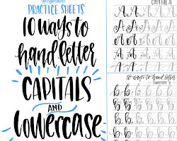

The characteristics of different types of letters and fonts
Serif fonts have small projections at the ends of the strokes, which are called serifs. Serifs are
thought to make text easier to read, especially in small sizes. Some examples of serif fonts include Times
New Roman, Garamond, and Baskerville.
Sans serif fonts do not have serifs. Sans serif fonts are often used for headlines and other short
pieces of text, as they can be more visually striking than serif fonts. Some examples of sans serif fonts
include Arial, Helvetica, and Trebuchet.
Script fonts Script fonts are characterized by their flowing, cursive style. Script fonts are often
used for informal documents, such as invitations or thank-you notes. Some examples of script fonts include
Brush Script, Copperplate, and Zapfino.
Display fonts are designed to be eye-catching and attention-grabbing. Display fonts are often used
for logos, posters, and other promotional materials. Some examples of display fonts include Impact, Comic
Sans, and Jokerman.

